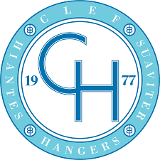
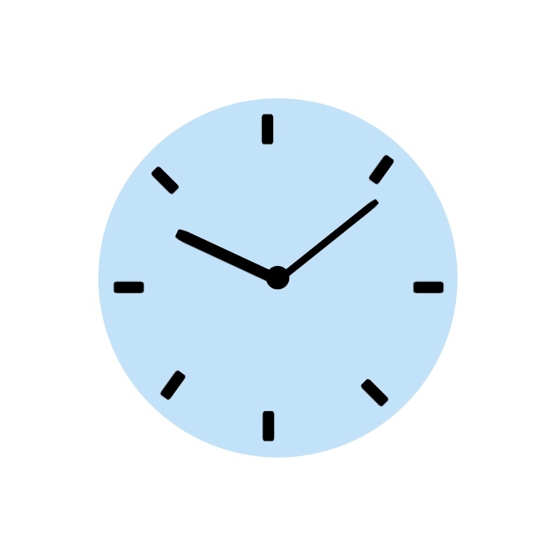
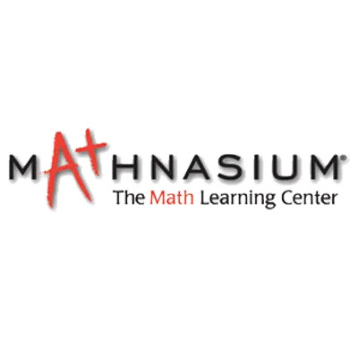

City of South Haven | Internship
May 2024 - July 2024, 3 months
Worked with city officials and non-profit leaders to expand and improve upon the city's Parks and Recreation department to retain young professionals and families.
Reached out to and conducted surveys with key stakeholders within the city to collect data on community needs.
Worked on the city website to update multiple web pages.
Broke down a broad, ambiguous problem and created a concrete relevant resolution.

Publicity Director | Fall Tour Manager | Winter Concert Manager
UNC-CH Clef Hangers | Group Member, Tenor II
August 2023 - Present, 11 months
Member of Carolina’s first all-male and most historic A Capella group founded in 1977.
Manage the group's social media presence while also using and learning skills in graphic design.
Led the entire planning and logistics of the group's winter concert.

Gap Year
Morehead-Cain Scholarship | Career Break
June 2022 - August 2023, 1 year 3 months
Through the Morehead-Cain Scholarship, I took a gap year before entering university. It was an incredibly formative experience that allowed me to volunteer, deeply explore my interests, immerse myself in new cultures, and bring into focus my career and life goals.
You can find out more about my experience here (WIP)
Floor Associate
Marshalls | Part-Time Job
October 2022 - December 2022, 3 months
WIP

Instructor
Mathnasium | Part-Time Job
May 2021 - January 2022, 9 months